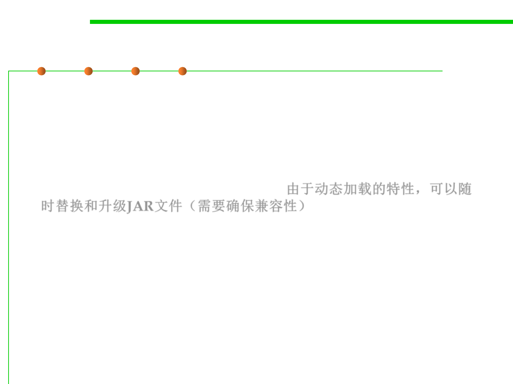

Libraries in Java
2.2 Process, Systems, and Tools of Software Construction
▪ JAR file is commonly used as a means of distributing programs. Not
only do you package your own software in JAR files, but you can
incorporate third-party packages by obtaining other people’s JAR
files and adding them to your own class path.
▪ Because of the dynamic loading system, you can replace and
upgrade JAR files whenever you want.由于动态加载的特性，可以随
时替换和升级JAR文件（需要确保兼容性）。